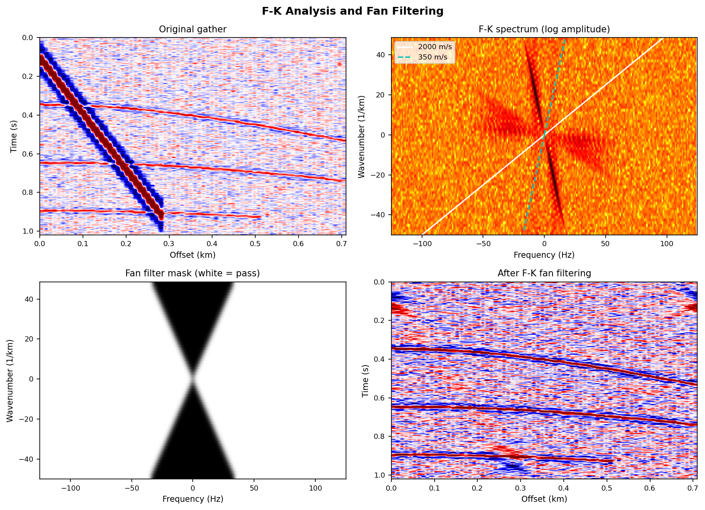
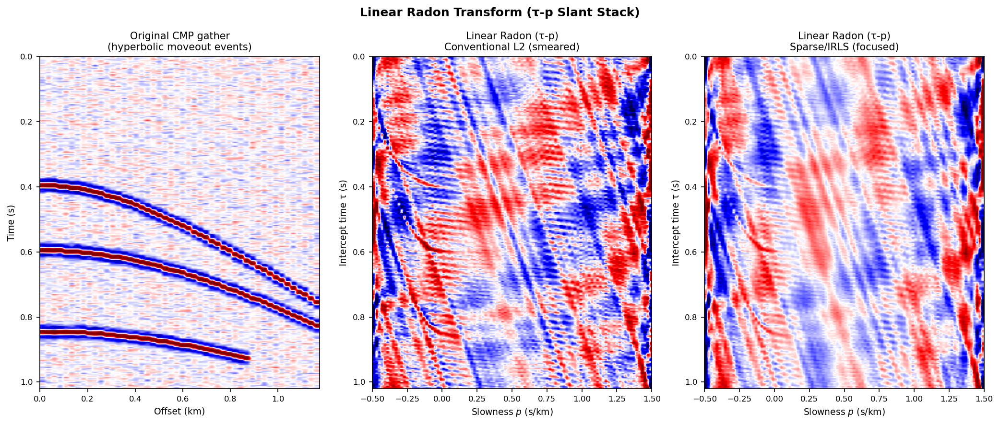

F-K 分析与 Radon 变换¶
引言¶
地震数据处理中的变换域方法，其核心思想是将数据从时间-空间域（\(t\)-\(x\)）映射到另一个域，使信号与噪声、不同视速度的波场在新域中分离。常用的变换对比：
| 变换 | 输入 → 输出 | 分辨信息 | 典型用途 |
|---|---|---|---|
| F-K（二维 FFT） | \(d(x,t)\) → \(D(k,f)\) | 频率 + 空间频率（视速度） | 倾斜噪声滤波、波场分离 |
| 线性 Radon（τ-p 斜叠加） | \(d(x,t)\) → \(m(\tau,p)\) | 截距时间 + 慢度（1/速度） | 多次波压制、面波提取 |
| 抛物线 Radon | \(d(x,t)\) → \(m(\tau,q)\) | 截距时间 + 曲率 | 多次波精确压制 |
| 聚束分析（Beamforming） | \(d(x,t)\) → \(P(f,k)\) | 方位角 + 慢度 | 阵列定向、震源定位 |
视速度（apparent velocity）是联系上述变换的关键量：
其中 \(p = k/f\) 为慢度（slowness，单位 s/m 或 s/km）。
F-K 分析¶
二维傅里叶变换¶
对多道地震记录 \(d(x_i, t)\) 做二维离散傅里叶变换，得到频率-波数谱：
- \(f\)（Hz）：时间频率，对应信号的振动快慢
- \(k\)（1/m）：空间波数，对应信号在空间上的振荡周期
- 视速度：\(v_\text{app} = f/k\)；视慢度：\(p = k/f\)
F-K 域的关键特性：对于沿 \(x\) 方向以视速度 \(v\) 传播的平面波 \(d(x,t) = w(t - x/v)\)，其 F-K 谱集中在直线 \(k = f/v\) 上。不同传播速度/方向的波型在 F-K 域呈不同斜率的条带，从而可以用扇形滤波器（fan filter）分离。
扇形滤波器（Fan Filter）¶
根据目标保留的视速度范围 \([v_\min, v_\max]\) 设计通带：
实际使用时需在通/阻带边界进行余弦渐变（cosine taper），避免时-空域出现振荡（Gibbs 现象）。
F-K 滤波在 VSP 波场分离中的应用
在 VSP 数据处理中，下行波（\(\partial t/\partial z > 0\)）和上行波（\(\partial t/\partial z < 0\)）的视速度符号相反，可用 F-K 滤波在波数轴正/负半轴直接分离，详见 VSP 原理。
空间假频（Spatial Aliasing）¶
当道间距 \(\Delta x\) 过大时，高倾角（大 \(|k|\)）事件会在空间方向发生假频：
对于视速度 \(v = 500\) m/s、\(\Delta x = 25\) m：\(f_\text{alias} = 10\) Hz——面波在 10 Hz 以上即发生假频，F-K 域出现混叠，滤波效果变差。
防止假频的条件：
DAS 的道间距（1–5 m）远小于传统勘探道距（25–50 m），空间假频问题大幅缓解。
高分辨率 F-K：Capon 自适应波束形成¶
传统 F-K 谱（延迟叠加/延迟求和 beamforming）本质上是在每个 \((f, k)\) 点对所有道加权求和，权重固定为 \(1/N\)，等价于对空间频率加矩形窗，导致旁瓣（sidelobes）污染。
Capon（1969）提出最小方差无畸变响应（Minimum Variance Distortionless Response，MVDR）：保持对目标方向增益为 1，同时最小化输出总功率——等价于最大程度压制非目标方向的干扰。
利用数据的空间协方差矩阵 \(\hat{\mathbf{R}}(f)\)（\(N_x \times N_x\)），Capon 谱为：
其中 \(\mathbf{a}(k) = [1,\, e^{ik\Delta x},\, e^{i2k\Delta x},\, \ldots]^T\) 为导向向量，\(\hat{\mathbf{R}}(f) = \frac{1}{N_\text{seg}}\sum_n \hat{\mathbf{d}}_n(f)\hat{\mathbf{d}}_n^H(f)\) 由多个数据段估计。
Capon 谱的旁瓣比常规 F-K 谱低约 10–20 dB，波数分辨率显著提升，尤其适合台站数少的密集阵列（如 DAS 短段）。
Capon 谱的计算要点
\(\hat{\mathbf{R}}\) 矩阵的估计需要足够的独立快照数（\(N_\text{seg} \gg N_x\)），否则矩阵病态，取逆失败。常用对角加载（diagonal loading）进行正则化：\(\hat{\mathbf{R}}_\epsilon = \hat{\mathbf{R}} + \epsilon\mathbf{I}\)，其中 \(\epsilon \approx 10^{-2}\) 倍最大特征值。
MUSIC 算法¶
多信号分类（Multiple Signal Classification，MUSIC）利用协方差矩阵的特征值分解，将空间分解为信号子空间和噪声子空间：
MUSIC 谱：
导向向量与噪声子空间正交时谱值趋于无穷，分辨率理论上无上限（仅受 SNR 限制）。代价是需要预知信源数 \(d\)（即取前 \(d\) 个特征向量为信号子空间）。

图 1：（左上）含面波噪声的原始 CMP 道集；（右上）F-K 谱（对数幅度），白线为 P 波视速度 2000 m/s，青线为面波 350 m/s；（左下）扇形滤波器掩模（白色为通带，\(v_\text{app} > 700\) m/s）；（右下）滤波后道集，面波噪声被有效压制。Radon 变换（斜叠加）¶
线性 Radon（τ-p 变换）¶
线性 Radon 变换（也称斜叠加，slant stack）将 \(x\)-\(t\) 域数据映射到截距时间-慢度（τ-p）域：
物理含义：沿斜率为 \(p\)（= 视慢度）的直线对数据 \(d(x,t)\) 做积分。线性同相轴（视速度 \(v = 1/p\)）在 τ-p 域被聚焦为单个点（\(\tau = t_0\)，\(p = 1/v\)）。
逆变换：
离散实现：相移求和¶
在频域高效实现线性 Radon：对每个频率 \(f\)，
这等价于以慢度 \(p\) 为参数的加权相位旋转（phase rotation），计算量为 \(O(N_p \cdot N_x \cdot N_f)\)，比时域逐点插值快。
抛物线 Radon¶
实际反射同相轴为双曲线而非直线；抛物线近似更为精确：
其中 \(q\)（s/m²）是曲率参数。抛物线 Radon 把 NMO（正常时差）校正后残余曲率不为零的多次波聚焦在与一次波不同的 \(q\) 位置，是多次波压制（de-multiple）的主流方法。
| Radon 类型 | 积分路径 | 聚焦目标 | 典型应用 |
|---|---|---|---|
| 线性（τ-p） | \(t = \tau + px\) | 线性同相轴 | 面波提取、平面波分解 |
| 抛物线 | \(t = \tau + qx^2\) | 动校正后的双曲事件 | 多次波压制（OBC、拖缆） |
| 双曲 | \(t = \sqrt{\tau^2 + x^2/v^2}\) | 原始双曲事件 | 速度分析（精确） |
传统 Radon 的局限：L2 解的扩散问题¶
离散 Radon 变换可写成线性方程组：\(\mathbf{d} = \mathbf{L}\mathbf{m}\)，其中 \(\mathbf{L}\) 为 Radon 算子矩阵。
最小范数 L2 解：
由于 \(\mathbf{L}^H\mathbf{L}\) 不是单位矩阵（稀疏观测）——尤其在慢度轴方向——L2 解在 τ-p 域严重扩散（smearing），相邻慢度之间出现串扰，影响后续的窗口切除和反变换精度。
稀疏/高分辨率 Radon（研究前沿）¶
L1 正则化（稀疏 Radon）¶
在 L1 范数约束下，Radon 系数被强迫为稀疏（大多数为零），与真实地震信号的稀疏特性吻合：
常用求解算法：ADMM（交替方向乘子法）、ISTA/FISTA（迭代软阈值）。
迭代重加权最小二乘（IRLS）¶
IRLS 将 L1 问题转化为一系列加权 L2 问题，每次迭代用上一轮解的幅度倒数更新权矩阵 \(\mathbf{Q}\)：
收敛后得到聚焦程度远优于 L2 解的 Radon 面板，即使仅迭代 1–3 次也有明显改善。
Sacchi-Ulrych 高分辨率 Radon¶
Sacchi & Ulrych（1995）在频域逐频率估计 Radon 系数，用自适应加权替代固定正则化：
其中 \(\mathbf{Q}(\omega) = \mathrm{diag}(|\hat{M}_j(\omega)|^2)\) 是上一轮估计的模型功率对角矩阵。这种频率自适应正则化使不同频率分量均获得匹配其功率谱的约束强度，在低 SNR 频段仍能保持聚焦。
压缩感知 Radon¶
当道距不均匀或存在缺失道时，传统 Radon 变换的正则网格假设失效。压缩感知框架将问题表述为：
其中 \(\mathbf{L}_\text{irr}\) 为非规则采样的 Radon 算子，无需插值预处理即可直接重建。

图 2：（左）含双曲同相轴的 CMP 道集；（中）传统 L2 Radon 变换，各事件在慢度轴上明显扩散；（右）稀疏/IRLS Radon，同相轴在 τ-p 域聚焦为尖锐条纹。各方法的细节要求与实践经验¶
F-K 滤波¶
| 要求/问题 | 说明 | 对策 |
|---|---|---|
| 道间距均匀 | 非均匀道距导致 F-K 谱失真 | 先插值至规则网格，或用 NUFFT |
| 边缘效应 | 有限孔径导致旁瓣 | 空间/时间方向加锥形窗（Hanning/Tukey） |
| 滤波器边界 | 矩形截断产生振荡 | 通/阻带边界做余弦渐变（≥ 5% 宽度） |
| 信号泄漏 | 速度范围设置过窄误切有用成分 | 在可接受残留噪声范围内放宽通带 |
| 3D 数据 | 仅做 2D F-K 忽略横向倾角 | 扩展为 3D F-K（\(k_x, k_y, f\)） |
线性 Radon¶
| 要求/问题 | 说明 | 对策 |
|---|---|---|
| 慢度范围设置 | 范围过窄导致能量外溢 | 覆盖所有目标视速度，含面波区域 |
| 慢度采样密度 | \(\Delta p\) 过大 → 慢度分辨率差 | \(\Delta p \leq 1/(N_x \cdot x_\max \cdot f_\max)\) |
| NMO 残余曲率 | 线性 Radon 无法精确聚焦双曲事件 | 用抛物线 Radon，或先做 NMO 再用线性 Radon |
| 正则化参数 | \(\varepsilon\) 过大→扩散，过小→不稳定 | 用 L 曲线或交叉验证自动选取 |
| 计算量 | 时域实现 \(O(N_p N_x N_t)\) 较慢 | 频域实现每次 FFT 后做 \((N_p \times N_x)\) 相位乘法 |
高分辨率方法（Capon / IRLS Radon）¶
| 方法 | 关键参数 | 经验值 |
|---|---|---|
| Capon MVDR | 对角加载量 \(\epsilon\) | \(0.01\)–\(0.05\) 倍最大特征值 |
| Capon MVDR | 时间段数（快照数） | \(N_\text{seg} > 2 N_x\)，否则矩阵奇异 |
| IRLS Radon | 迭代次数 | 3–10 次；过多可能导致过稀疏、振幅失真 |
| IRLS Radon | 稳定化因子 \(\delta\) | \(0.01\)–\(0.05\) 倍最大幅度 |
| 稀疏 Radon（ADMM） | 正则化权重 \(\lambda\) | 用 \(\lambda = \sigma_n\sqrt{2\ln N}\)（BIC 估计） |
变换域方法综合对比¶
| 方法 | 分离依据 | 分辨率 | 计算量 | 当前研究热点 |
|---|---|---|---|---|
| F-K 扇形滤波 | 视速度（线性） | 受孔径/道数限制 | 低（FFT） | 自适应权重、DAS 非均匀采样 |
| Capon MVDR | 视速度（自适应） | 高（受 SNR 限制） | 中（矩阵求逆） | 对角加载优化、递归更新 |
| MUSIC | 视速度（子空间） | 超高分辨率 | 高（特征分解） | 信源数估计、非平稳协方差 |
| 线性 Radon（L2） | 视速度（线性） | 低（扩散） | 中 | 基准参考，现已少用 |
| 高分辨率 Radon（IRLS） | 视速度（线性） | 高 | 较高 | 压缩感知、不规则网格 |
| 抛物线 Radon（L1） | 曲率 + 速度 | 高 | 较高 | 深水多次波精细压制 |
Python 示例¶
F-K 分析与扇形滤波¶
import numpy as np
import matplotlib.pyplot as plt
from scipy.ndimage import gaussian_filter
# dx=10 m 保证 350 m/s 面波在 17.5 Hz 以下不出现空间假频
dt = 0.004; dx = 10.0
nt = 256; nx = 72
t = np.arange(nt)*dt # 0…1.02 s
x = np.arange(nx)*dx # 0…710 m
wav_len = 48 # 短子波（0.192 s），远小于 nt，确保事件可写入
def ricker(f0, dt, n):
tc = np.arange(n)*dt - n*dt/2
return (1 - 2*(np.pi*f0*tc)**2) * np.exp(-(np.pi*f0*tc)**2)
wav_P = ricker(30.0, dt, wav_len)
wav_SW = ricker(7.0, dt, wav_len)
# 构建含噪道集
data = np.zeros((nx, nt))
for t0, v_int in [(0.25, 2000.), (0.55, 2100.), (0.80, 2200.)]:
for ix, xi in enumerate(x):
it = int(round(np.sqrt(t0**2 + (xi/v_int)**2) / dt))
if 0 <= it <= nt - wav_len:
data[ix, it:it+wav_len] += wav_P * np.exp(-it*dt*0.4)
for ix, xi in enumerate(x):
it = int(round((0.02 + xi/350.) / dt))
if 0 <= it <= nt - wav_len:
data[ix, it:it+wav_len] += 3.0 * wav_SW
data += 0.06 * np.abs(data).max() * np.random.default_rng(42).standard_normal(data.shape)
# 2D FFT：FK 形状 (nx, nt) = (k 轴, f 轴)
FK = np.fft.fftshift(np.fft.fft2(data))
f_ax = np.fft.fftshift(np.fft.fftfreq(nt, dt))
k_ax = np.fft.fftshift(np.fft.fftfreq(nx, dx)) # 1/m
KK, FF = np.meshgrid(k_ax, f_ax, indexing='ij') # 均为 (nx, nt)
# 扇形滤波器（|v_app| > 700 m/s）
eps = 1e-9
v_app = np.abs(FF / (KK + eps))
mask = np.where((np.abs(KK) < eps) | (v_app >= 700.), 1.0, 0.0)
mask = gaussian_filter(mask.astype(float), sigma=1.5) # 平滑边界
data_filt = np.real(np.fft.ifft2(np.fft.ifftshift(FK * mask)))
# 绘制 F-K 谱（注意：FK 形状 (nx,nt)，直接 imshow 不需转置）
fk_amp = np.log10(np.abs(FK) + 1)
plt.imshow(fk_amp, aspect='auto', cmap='hot_r', origin='lower',
extent=[f_ax[0], f_ax[-1], k_ax[0]*1e3, k_ax[-1]*1e3])
plt.xlabel('Frequency (Hz)'); plt.ylabel('Wavenumber (1/km)')
高分辨率 Radon（IRLS，频域）¶
from numpy.fft import rfft, irfft
p_vals = np.linspace(-0.0005, 0.0015, 120) # s/m
nf = nt//2 + 1
D = rfft(data, axis=1) # (nx, nf)
L = np.exp(-2j*np.pi * np.outer(p_vals, x)) # (np, nx)
LLH = L @ np.conj(L).T # (np, np) 固定
M_hr = np.zeros((len(p_vals), nf), dtype=complex)
for iif in range(1, nf):
d_f = D[:, iif]
rhs = L @ d_f
eps = max(1e-3 * np.dot(d_f.conj(), d_f).real / nx, 1e-10)
m_L2 = np.linalg.solve(LLH + eps*np.eye(len(p_vals)), rhs) # L2 初始解
# IRLS: 用 L2 解更新权矩阵
w = 1.0 / (np.abs(m_L2) + 0.02*np.abs(m_L2).max() + 1e-12)
M_hr[:, iif] = np.linalg.solve(LLH + eps*np.diag(w), rhs) # 加权 L2
radon_hr = irfft(M_hr, n=nt, axis=1).real
参考文献¶
- Capon, J. (1969). High-resolution frequency-wavenumber spectrum analysis. Proceedings of the IEEE, 57(8), 1408–1418.
- Schmidt, R. O. (1986). Multiple emitter location and signal parameter estimation. IEEE Transactions on Antennas and Propagation, 34(3), 276–280.
- Hampson, D. (1986). Inverse velocity stacking for multiple elimination. SEG Technical Program Expanded Abstracts, 422–424.
- Sacchi, M. D., & Ulrych, T. J. (1995). High-resolution velocity gathers and offset space reconstruction. Geophysics, 60(4), 1169–1177.
- Trad, D., Ulrych, T., & Sacchi, M. (2003). Latest views of the sparse Radon transform. Geophysics, 68(1), 386–399.
- Herrmann, F. J., & Hennenfent, G. (2008). Non-parametric seismic data recovery with curvelet frames. Geophysical Journal International, 173(1), 233–248.
- van der Baan, M., & Fomel, S. (2009). Nonstationary phase estimation using regularized local kurtosis maximization. Geophysics, 74(6), A75–A80.
- Naghizadeh, M., & Sacchi, M. D. (2010). Beyond alias hierarchical scale curvelet interpolation of regularly and irregularly sampled seismic data. Geophysics, 75(6), WB189–WB202.